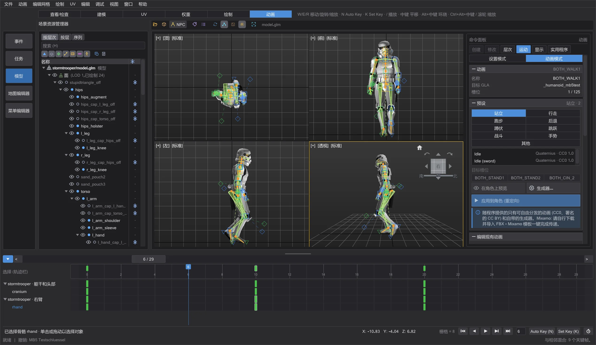
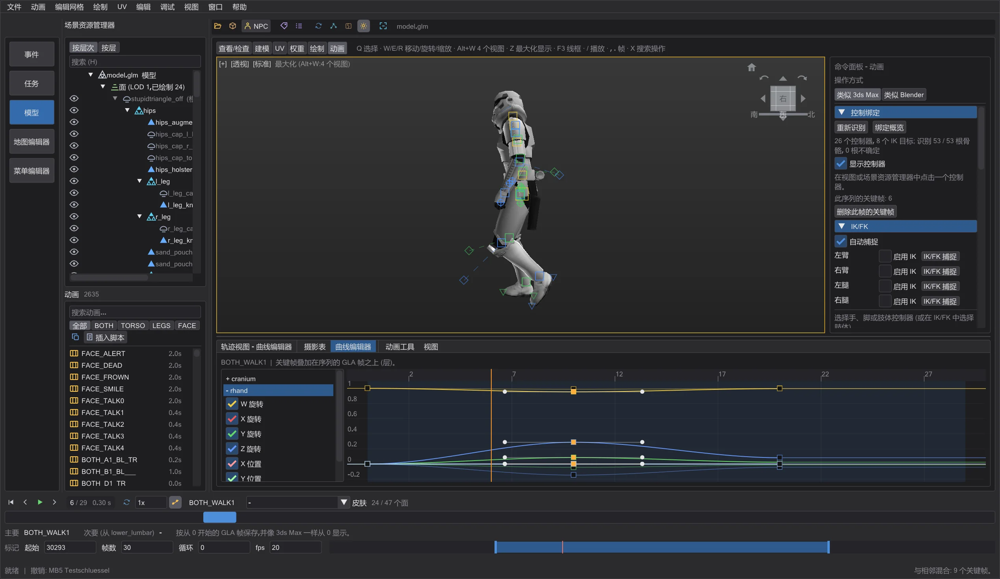
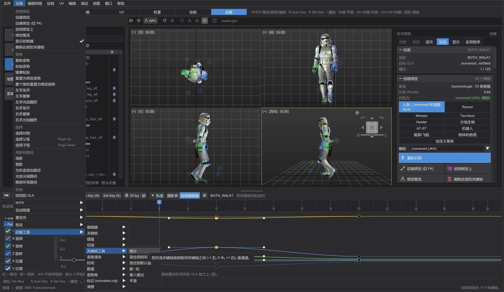
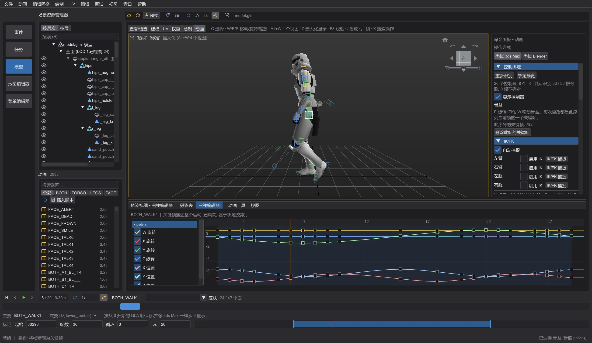

模型选项卡: 摄影表、曲线编辑器和动画工具
在时间上和曲线上编辑控制绑定的关键帧, 混合和缓动, 修改时间和数值, 镜像整个序列, 把姿势存入库, 将烘焙帧精简为少量关键帧, 并在视图中拖动骨盆路径。

摄影表#
摄影表 (菜单 动画 > 动画工具 > 编辑器、视图右键、搜索 X/F3 或卷展栏 曲线和动画工具) 在视图下方打开独立窗口; 像 3ds Max 时称为 轨迹视图 - 摄影表, 像 Blender 时称为 摄影表。它只在打开时占用空间, 并可停靠。左侧是各行: 汇总、每个肢体一行汇总 (单击折叠) 以及每根骨骼一行; 右侧所选序列的每个关键帧都是一个菱形。单击菱形选中 (Shift 追加), 围绕关键帧拖框选择, 拖动所选关键帧在时间上移动——始终以整帧移动, 因为 GLA 存储整帧。单击汇总行选中该肢体在该帧的所有关键帧。浅色带是 animation.cfg 行的序列, 橙线是当前帧; 单击标尺设置它。滚轮缩放, 中键平移。仅显示有动画的 和 仅显示所选 过滤各行, 全部显示 适配序列。像 Blender 时, 鼠标在编辑器上方, X 删除、G 移动、S 缩放所选关键帧。
曲线编辑器#
曲线编辑器 (像 3ds Max 时为 轨迹视图 - 曲线编辑器, 像 Blender 时为 曲线编辑器) 每个通道显示一条曲线: 旋转为四元数 W 旋转、X 旋转、Y 旋转、Z 旋转, 以及位置 X、Y、Z。单击左侧的骨骼展开其通道, 可在那里显示或隐藏单条曲线。上下拖动关键帧改变该通道的值, 横向拖动则按整帧移动; 拖动手柄塑造曲线。插值 设置从所选关键帧到下一个关键帧的常量、线性 (沿最短弧旋转, slerp) 或贝塞尔。切线 设置手柄: 像 Blender 时为自动钳制 (新关键帧的默认值, 从不超调)、自动、矢量、对齐和自由; 像 3ds Max 时同样的类型称为自动、平滑、线性、自定义和自定义 (断开)。贝塞尔曲线的计算与 Blender 的 F 曲线完全相同 (手柄规则、Continuous Acceleration、求值); 被拖动的自动手柄会像那里一样变为对齐, 矢量手柄变为自由。Ctrl+滚轮缩放数值。姿势使用归一化的四元数, 因此人物始终刚性旋转。

动画工具#
每个工具都在菜单 动画 > 动画工具、编辑器和视图的右键以及搜索中, 每个都有提示。关键帧工具 逐通道作用于所选关键帧: 细分、混合到相邻、混合到默认值、推 / 拉、缓入缓出 和 平滑。姿势滑块 根据前后关键帧设置当前帧的姿势: 姿势细分器、推动姿势、放松姿势、与相邻混合、混合到静止姿势。每个都会打开一个小滑块; 拖动时视图即显示结果, 应用 将其保留为一个撤销步骤, 取消 恢复。时间: 把所选吸附到当前帧 (或平移使第一个或最后一个关键帧落在那里)、在当前帧插入或删除帧、时间偏移、共享关键帧时间 (也可采用最后所选骨骼的时间)。数值: 归零、设为当前值、取反、反向、以当前帧镜像; 动画偏移 把某个关键帧上的改动传到该骨骼的其他关键帧。镜像动画 (左/右) 沿 l_/r_ 骨骼镜像整个序列。姿势库 把命名姿势存入模型文档并再次应用, 也可镜像应用。标记 (animation.cfg) 使用 animation.cfg 行: 在其首帧和末帧设置关键帧、闭合循环、选择其中的关键帧。

清理和精简#
GLA 存储每一帧。将帧精简为关键帧 把所选序列的帧 (叠加绑定关键帧) 变成少量可编辑的关键帧: 每根骨骼在曲线偏差最大处加关键帧, 然后再删除所有不需要的关键帧; 线性和贝塞尔都会尝试, 保留关键帧更少的那种。之后关键帧在绑定姿势之上描述整个运动。规则是第 3 阶段 compressBone 的界限: 再次烘焙后, 每个骨骼帧的旋转都在 GLA 格式本身允许的舍入范围内, 位置最多相差一个 1/64 级。在 _humanoid 的每个序列上测得: Jedi Academy 保留 58% 的骨骼帧作为关键帧, Jedi Outcast 66%, Movie Duels 43%, 每个骨骼帧都在界限内。 删除多余关键帧 删除与相邻相同的关键帧, 删除静态通道 为不动的骨骼保留一个关键帧, 四元数过滤 让每个四元数采用相邻的符号, 使曲线不跳变 (通道是四元数, 不需要欧拉过滤)。像以前一样用 烘焙到 GLA 把结果烘焙到目标槽位。

拖动运动路径#
在骨盆或根部的路径上 (为所选添加路径), 视图中的每个点都可以拖动: 骨骼在该帧移到那里 (在穿过该点的视图平面内) 并获得一个关键帧 (Ctrl+Z 撤销)。开启 动画偏移 时其他关键帧随之移动。在手、脚和光剑尖端的路径上, 点移动的是 IK 目标 (见 IK/FK 页)。